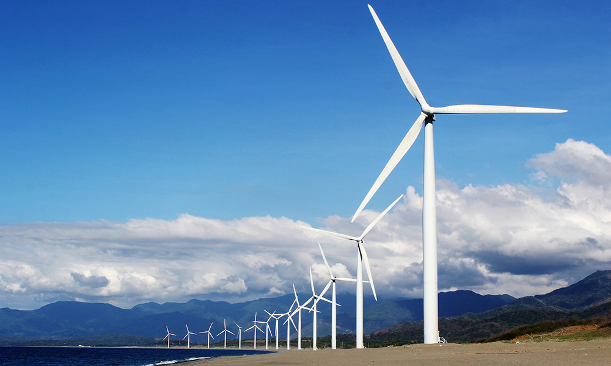

home > 사업분야 > 에코플랜트
에코플랜트
한 차원 앞선 플랜트 기술로 풍요로운 우리의 미래를 선도합니다
사업소개
에코플랜트사업은 높은 기술력과 시공능력을 바탕으로 국내외 다수의 철강, 자동차 생산인프라 EPC공사를 성공적으로 수행해왔습니다. 더 나아가 스마트팩토리 및 스마트물류사업에 진출하여 4차산업 미래기술 개발에 앞장서고 있으며 수소충전소, 수소추출기 등 수소인프라구축에 필수적인 사업을 수행함으로써 글로벌 수소경제 실현과 수소사회로의 진입을 선도하고 있습니다.
| 구분 | 프로젝트 | 년도 |
|---|---|---|
| 고로설비 | 현대제철 고로3기 소결설비 | 2021 |
| 제강설비 | 현대제철 특수강 제강 주설비 | 2013 |
| 연속주조설비 | 포스코 광양 연주 세그먼트 | 2010 |
| 압연설비 | VAI 영국 연주설비 | 2006 |
| 산소설비 | 현대제철 그린에어 산소공장 합리화 공사 | 2008 |
| 벨트컨베이어 | 현대건설 사우디 Ma'aden Refinery Conveyor 설비 | 2012 |
제품소개
-
- 제철설비
- 현대로템 제철설비사업부문은 지난 30여년 간 석회소성설비, 소결설비, 고로설비, 제강설비, 연속주조설비 및 압연설비등의 제철소 관련 핵심설비를 제작, 납품, 설치, 시운전하여 국내 외 시장에서 엔지니어링 및 제작기술의 경쟁력을 인정받고 있습니다.
-
- 물류설비
- 물류설비는 철광석, 석탄 및 부원료등을 해상 및 육송 운송으로 반입하여 적치장에 일정기간 적치한 후, 후공정인 여러 공장에 필요한 크기로 파쇄, 선별, 배합 처리하는 설비입니다. 설비구성은 부두에서 원료를 이송하는 연속식 하역기(SCU), 하역된 원료를 이송하는 컨베이어 라인 및 적치장에 원료를 적/불출하는 적치기(Stacker) 및 불출기(Reclaimer) 등으로 구성됩니다.
-
- 발전설비
- 현대로템은 석탄화력발전소, 복합화력발전소, 지열발전소 등의 발전플랜트를 설계에서부터 자금조달, 제작, 구매, 시공에 이르기까지 EPC 형태로 수행하고 있으며, 태양열, 풍력 등 신재생 분야에서의 연구개발을 통해 에너지 보존에 앞장서고 있습니다.
-
- 프레스
- 현대로템의 종합금속성형시스템은 코일의 입고에서부터 블랭크 생산, 운반, 성형, 최종 제품의 적재 및 관리에 이르기까지 공정간 유기적으로 조직화된 설비체계로서 최고의 효율성과 생산성을 보장하는 첨단의 설비입니다. 현대로템은 턴키 프로젝트 시스템을 기반으로 최적의 환경과 설비를 구축하여 고객에게 제품 품질에 대한 만족과 신뢰를 제공하고 있습니다.
-
- 자동차생산
- 각 공장별 특징에 맞춘 내 마모성, 내열성, 내 화학성을 고려한 Conveyor 시스템을 보유하고 있으며, 고속 이송대응을 통한 라인 버퍼유지, 개별이송 시스템을 적용함으로 랜덤생산 및 다 차종 생산에 유리한 시스템을 제안하고 있습니다. EMS를 필두로 하여 Skillet conveyor, Skid system, Power & Free System, Slat conveyor, Hybrid system 등 자동차 생산에 적용되는 Conveyor 시스템을 보유하고 있습니다.
-
- 공항설비
- 25년간의 축적된 기술을 바탕으로 국내외 공항에 안정적인 설비를 공급해 왔으며, 고객의 요구조건 및 주변환경에 적합한 엔지니어링을 수행하고 있으며 A/S 및 유지 보수사업도 담당하고 있습니다.